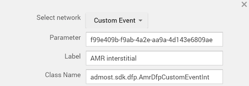

Overview
The following document detaily shows that how to integrate AMR Cordova Plugin and networks. You can download plugin here
After you download make sure you change applovin.sdk.key in plugin.xml.///Android
<meta-data
android:name="applovin.sdk.key"
android:value="YOUR SDK KEY"/>
///IOS
<config-file target="*-Info.plist" parent="AppLovinSdkKey">
<string>YOUR SDK KEY </string >
< /config-file>
cordova plugin add /plugin/location
Requirements
Android Platform Version
Android 6.4
App ID & Zone ID
Application Id provided in Admost Mediation Dashboard. Zone Id(s) provided in Admost Mediation Dashboard.
Usage
Admost Mediation library is a lean yet complete library that allows you to request and show ads. Basic integration steps are:
Init Ads
Initialize the Admost Mediation SDK in your application’s launcher Activity. This starts pre-caching and prepares the SDK to display ads.
var inputs = {"applicationIdAndroid" : " < ADMOST_ANDROID_APP_ID > ","applicationIdIOS" : " < ADMOST_IOS_APP_ID > ", "userConsent" : " < userConsent >", "subjectToGdpr" : " < subjectToGdpr > "};
window.plugins.Amr.startWithConfig(inputs);GDPR
Once you have collected the user’s consent, you can pass it onto the SDK using the init configuration parameters shown above.
"userConsent" : " < userConsent > " If you have the user’s consent, set it "1". If you do not have the user's consent, set it "0".
"subjectToGdpr" : " < subjectToGdpr > " If you know the user is subject to GDPR, set it "1". If you know the user is not subject to GDPR, set it "0".
If you don’t pass the user’s consent or subjectToGDPR to the SDK, the rules described in GDPR have been applied.
Banner Ads
window.plugins.Amr.loadBanner({"bannerIdAndroid" : "< ADMOST_ANDROID_BANNER_ZONE_ID >","bannerIdIOS" : "< ADMOST_IOS_BANNER_ZONE_ID >"});
window.plugins.Amr.hideBanner();
window.plugins.Amr.destroyBanner();
document.addEventListener('onBannerReady', function(){});
document.addEventListener('onBannerLoad', function(){});
document.addEventListener('onBannerFail', function(e){
alert("error: " + e.error);
});
document.addEventListener('onBannerShow', function(){});
document.addEventListener('onBannerDestroy', function(){});
Interstitial
window.plugins.Amr.loadInterstitial({"interstitialIdAndroid" : "< ADMOST_ANDROID_INTERSTITIAL_ZONE_ID >", "interstitialIdIOS" : "< ADMOST_IOS_INTERSTITIAL_ZONE_ID >", "autoShowInterstitial": true/false});
window.plugin.Amr.showInterstitial();
window.plugins.Amr.destroyInterstitial();
document.addEventListener('onInterstitialReady', function(){});
document.addEventListener('onInterstitialFail', function(e){
alert("error: " + e.error);
});
document.addEventListener('onInterstitialShow', function(){});
document.addEventListener('onInterstitialDismiss', function(){});
Rewarded
window.plugins.Amr.loadRewardedVideo({"videoIdAndroid" : "< ADMOST_ANDROID_VIDEO_ZONE_ID >","videoIdIOS" : "< ADMOST_IOS_VIDEO_ZONE_ID >", "autoShowVideo" : true/false});
window.plugins.Amr.showRewardedVideo();
window.plugins.Amr.destroyRewardedVideo();
document.addEventListener('onVideoReady', function(){});
document.addEventListener('onVideoReward', function(){});
document.addEventListener('onVideoFail', function(e){
alert("error: " + e.error);
});
document.addEventListener('onVideoShow', function(){});
document.addEventListener('onVideoDismiss', function(){});
GDPR
We specified your responsibilities for obtaining consent from end-users of your apps in our updated Privacy Policy. By updating GDPR compatible SDK you agree that you’re responsible for inform the end-users and take their consent. Please note that the consent collection applies only to users located in the European Economic Area, the United Kingdom, and Switzerland. As data controller you should take consent of end-users by preparing consent window, you can find samples below. When you take end-user consent, the response will be passed to Admost SDK. You can find the implementation here

GDPR Rules
Admost provides you two input parameter for GDPR compatibility: "subjectToGdpr" and "userConsent".
If you can determine whether the user is located in European Union or not, you can use optional "subjectToGdpr" to set user's subject to GDPR flag. If you do not use this method, subjectToGdpr status remains as unknown. In this case, Admost SDK will try to determine whether the user is in EU or not which is totally under the responsibility of you. If the user is in EU, networks are not allowed to show personalized ads. If the user is not located in EU, the ad networks are allowed to show personalized ads.
On condition that you want to obtain neither user's subjectToGdpr status nor any negative legal consequences, SubjectToGDPR must set "subjectToGdpr": "1" for each user. In this case, Admost considers all users as subject to GDPR and if the consent is not allowed, Admost blocks ad networks to collect data from users. Which may cause a decrease in overall revenue performance apart from Admost.
If you obtain user's consent and set "userConsent": "1" , personalized ads would be shown to the users. Otherwise, you set "userConsent": "0" which would block the personalized ads, unless the user is not subject to GDPR.
If you do not use"userConsent", user consent status remains unknown. In this case, if you provide "subjectToGdpr": "1", the ad networks do not have the ability to serve personalized ads. If you provide "subjectToGdpr": "0" , the ad networks have the ability to serve personalized ads.
If you do not provide both "userConsent" and "subjectToGdpr", Admost decides whether the user is located in EU or not which is totally under the responsibility of you.
If you want to obtain neither the user's consent nor any negative legal consequences, you must set "userConsent" : "0" for every user. In this case, Admost considers the user has no consent, the ad networks are not allowed to serve personalized ads, except only you do not provide "subjectToGdpr": "0" .
Extras
DFP/Admob Mediation Integration
The AMR DFP Adapter lets publishers integrate Admost Mediation Router ads into applications with DFP or Admob Mediation set as main ad mediation layer.
In order to show AMR ads in DFP/Admob Mediation you should first follow Setup and init phases of AMR documentation. Then, you should follow dedicated steps of DFP or Admob Mediation to set AMR as an ad mediation source.
After adding AMR as an ad mediation source you should define class names for banner and interstitial
ad custom events. Enter admost.sdk.dfp.AmrDfpCustomEventBanner and
admost.sdk.dfp.AmrDfpCustomEventInt class names for
banner and interstitial class names respectively. You must pass your AMR zone Id to custom event via
Parameter field.

Now you can show AMR banner and interstitial ads via DFP or Admob Mediation.
You can check DFP banner and interstitial example in demo project; DFPIntegration.
Test Suite
You can use Test Suite to test your ad networks with your zone ids.
To use Test Suite in your application, you can use following code;
window.plugins.Amr.startTestSuite();
Screen Shot

Release Notes
In this page, you can find a record of all the changes made to this project such as bug fixes, new features, etc.
Version 1.0.1 June 29, 2018
- AMR Android SDK 1.6.8
- Admob 15.0.1
- Applovin 8.0.1
- Facebook 4.28.2
- IronSource 6.7.9
- Mopub 5.1.0
- Tapjoy 11.12.2
- Unity 2.2.1
- Multidex Support
- AMR IOS SDK 1.3.61
- Admob 7.31
- Applovin 5.0
- Facebook 4.28
- IronSource 6.7
- Mopub 5.0
- Tapjoy 11.12
- Unity 2.2